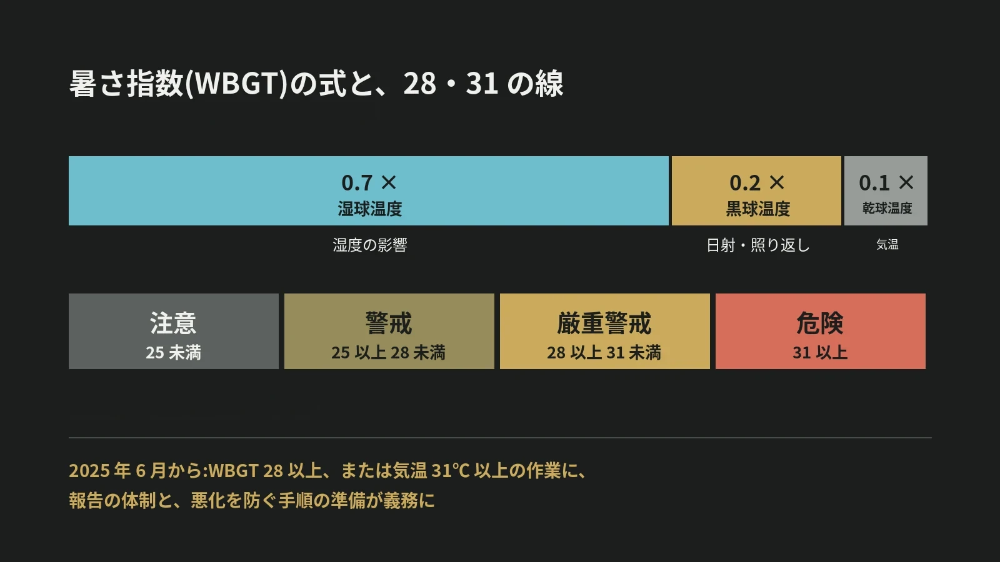

LOTUS VISUAL JOURNAL / 現場の裏側 #29
暑さは、
気温だけでは測れない。
暑さ指数と、夏の現場の決まり
結論から。熱中症の危険は、気温ではなく「暑さ指数(WBGT)」で見ます。湿度、日射や照り返し、気温の 3 つを取り入れた数字です。
2025 年 6 月からは、この数字が 28 以上になる作業について、職場の決まりも変わりました。
01 / THREE FACTORS3 つを足し合わせた数字
環境省の熱中症予防情報サイトによると、暑さ指数(WBGT)は、熱中症を防ぐことを目的に、1954 年にアメリカで提案された指標です。単位は気温と同じ ℃ ですが、値は気温とは違います。
取り入れているのは 3 つ。湿度、日射や輻射(照り返しなど、周りから受ける熱)、そして気温です。屋外の式は「0.7 × 湿球温度 + 0.2 × 黒球温度 + 0.1 × 乾球温度」。屋内は「0.7 × 湿球温度 + 0.3 × 黒球温度」です。
02 / SAME AIR同じ気温でも、数字は変わる
式に数字を入れてみます。気温(乾球温度)が 33℃ の屋外で、湿球温度が 27℃、黒球温度が 45℃ だったとします。0.7 × 27 + 0.2 × 45 + 0.1 × 33 = 31.2。
同じ 33℃ でも、湿球温度が 24℃、黒球温度が 38℃ なら、0.7 × 24 + 0.2 × 38 + 0.1 × 33 = 27.7 です。
気温が同じでも、湿度と日射の違いで、暑さ指数は 31.2 と 27.7 に分かれます。気温の数字だけを見ていると、この差は見えません。
03 / THE LINES28 と 31 という線
環境省のサイトは、暑さ指数ごとの「日常生活に関する指針」(日本生気象学会)を載せています。25 未満が「注意」、25 以上 28 未満が「警戒」、28 以上 31 未満が「厳重警戒」、31 以上が「危険」。「警戒」の段階で、運動や激しい作業をする際は定期的に充分に休息を取り入れる、とされています。
熱中症警戒アラートは、その地域のいずれかの地点で、翌日か当日の最高の暑さ指数が 33 に達すると予測されるときに発表されます。
04 / THE RULE2025 年 6 月からの、職場の決まり
2025 年 6 月 1 日、職場の熱中症対策を強める労働安全衛生規則の改正が施行されました。厚生労働省の労働局の説明によると、対象は、暑さ指数が 28 以上、または気温が 31℃ 以上の作業場で行う作業のうち、続けて 1 時間以上、または 1 日に 4 時間を超えて行うことが見込まれるものです。
事業者に義務づけられたのは 2 つ。1 つめは、熱中症の自覚症状がある人や、そのおそれがある人を見つけた人が報告するための体制(連絡先や担当者)を、事業場ごとにあらかじめ決めて、関係する作業者に知らせておくこと。2 つめは、作業からの離脱、体の冷却、必要に応じた医師の診察や処置、緊急連絡網や搬送先など、悪化を防ぐための手順をあらかじめ決めて、知らせておくことです。
05 / ON SITELOTUS VISUAL へのご相談では
LOTUS VISUAL へのご相談では
夏に屋外で LED の画面を組むご相談では、設営の時間帯を最初にうかがいます。日なたの作業を、朝と夕方に寄せられるか。日陰になる休憩の場所と、飲み物を置く場所はどこか。
当日は、環境省のサイトで暑さ指数の予測を見て、作業と休憩の配分を決めます。具合の悪い人が出たときの連絡先と手順は、作業を始める前に全員で確かめます。数字を見ないまま、「まだ大丈夫」で続けることはしません。
06 / TAKEAWAY今日の持ち帰り
今日の持ち帰り
- 暑さは、気温ではなく暑さ指数で見る。湿度、日射や照り返し、気温の 3 つを足し合わせた数字。
- 線は 28 と 31。28 以上で「厳重警戒」、31 以上で「危険」。警戒アラートは 33。
- 2025 年 6 月から、準備が義務に。報告の体制と、悪化を防ぐ手順を、先に決めて知らせておく。
出典:環境省 熱中症予防情報サイト「暑さ指数(WBGT)とは?」「暑さ指数(WBGT)の詳しい説明」「熱中症警戒情報とは」(2026 年 11 月 13 日閲覧。日常生活に関する指針は、日本生気象学会「日常生活における熱中症予防指針 Ver.4」(2022)による)、厚生労働省 富山労働局「職場における熱中症対策の強化について(令和 7 年 6 月 1 日施行)」。計算に使った温度は、式の働きを見るために置いた値です。